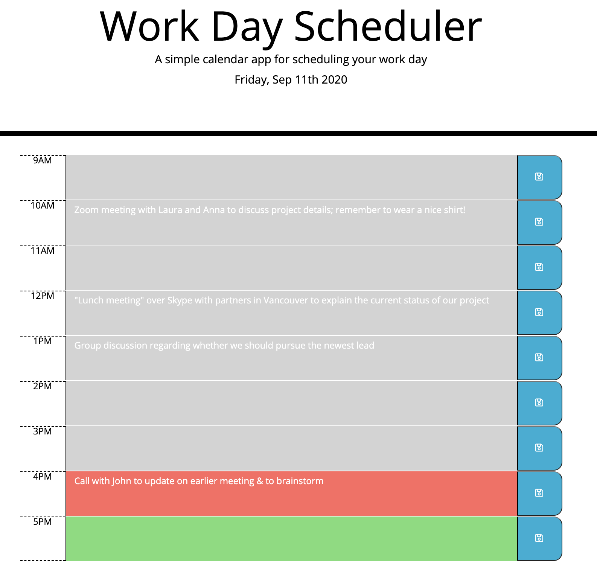
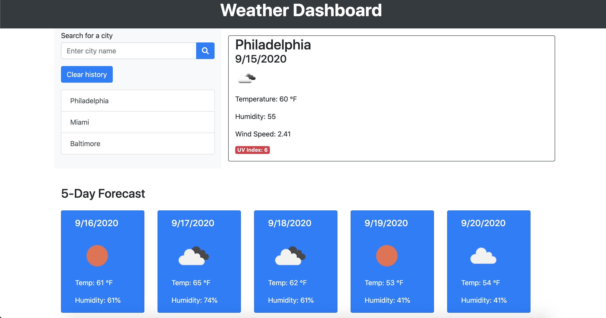

The StockFinder website, which we called "What the Stock", was our first collaborative coding project. We had a list of criteria given to us which we followed. It included the use of at leat two API's, one of which had to be something other than what we used in class. We used four API's, none of which were ones we used in class. Our criteria also included the use of a CSS framework other than Bootstrap. We used a framework called "Bulma", which was fairly intuitive and we easily adapted to it.
Originally we met and brainstormed various ideas, weighing the pro's and con's of each, and then took a vote by ranking the choices of subjects for our site. The stock market idea won slightly over a site about dogs. We then sketched out a wireframe. Here are pictures of our rough sketches:
From here, we set up a Kanban project area on gitHub to manage our work and brainstormed a list of tasks. While we mostly kept to that project manager framework, we eventually ignored it and just worked on our pieces to get the job done, helping each other when we could.
We met in our Zoom classroom breakout rooms during class and office hours, then on Google Meet for the remainder of the time so that we could easily collaborate. Our biggest takeawys were:
learning how to work with API's and manipulate them by stacking, for example, to get the desired output.
learning to work in a team and reviewing all of the material we have learned in class, especially local storage manipulation.
learning how to work with APis and create links from the APIs that the user can click to another website.
learning how to use gitHub and its various components to manage a project, and learning when to ask for help from external sources.
HOMEWORK ASSIGNMENT:

In this project, we were tasked with creating a functional work day scheduler
(between the hours of 9AM and 5PM) that would change colors depending on the time of day.
We also had to create text blocks within the calendar that would be functional to write messages.
HOMEWORK ASSIGNMENT:

In this assignment, we were tasked with using an API to retrieve data from another
application and use that data in our own context. We used OpenWeatherMap's API to generate a weather
forecast application that returned the current conditions and a five-day forecast for whatever city the
user typed into the search box. The city name is added to the list to the left and the data is saved into
localStorage so that when the city is clicked on, the correct weather information loads. When the "clear
history" button is clicked, both the list and the localStorage is cleared.